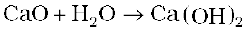

7.12 Simple Oxides
A binary compound of oxygen with another element is called oxide. As already stated, oxygen reacts with most of the elements of the periodic table to form oxides. In many cases one element forms two or more oxides. The oxides vary widely in their nature and properties.
Oxides can be simple (e.g., MgO, Al2O3 ) or mixed (Pb3O4, Fe3O4). Simple oxides can be classified on the basis of their acidic, basic or amphoteric character. An oxide that combines with water to give an acid is termed acidic oxide (e.g., SO2, Cl2O7, CO2, N2O5 ). For example, SO2 combines with water to give H2SO3, an acid.
As a general rule, only non-metal oxides are acidic but oxides of some metals in high oxidation state also have acidic character (e.g., MN2O7, CrO3, V2O5). The oxides which give a base with water are known as basic oxides (e.g., Na2O, CaO, BaO). For example, CaO combines with water to give Ca(OH)2, a base.

In general, metallic oxides are basic.
Some metallic oxides exhibit a dual behaviour. They show characteristics of both acidic as well as basic oxides. Such oxides are known as amphoteric oxides. They react with acids as well as alkalies. For example, Al2O3 reacts with acids as well as alkalies.
There are some oxides which are neither acidic nor basic. Such oxides are known as neutral oxides. Examples of neutral oxides are CO, NO and N2O.